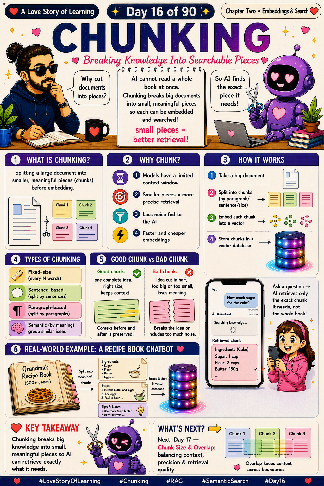

📜 The 30-second brief
In Note 15 we gave our embeddings a home — the vector database. But before a big document can move in, it has to be cut into the right size pieces first. That cutting is Chunking: splitting a large document into smaller, meaningful pieces before you embed them.
Why bother? Because AI models can't read an entire book in one go, and searching one giant blob returns messy, unfocused answers. Small, well-formed pieces = more precise retrieval and less noise fed to the model. Get chunking right and everything downstream — search, RAG, answers — gets sharper. 💕
💌 A fresh analogy: chocolate you can actually share
A giant chocolate bar is wonderful — but you can't hand the whole thing to someone who just wants one bite. So you snap it along the grooves into neat squares. Each square is complete, satisfying, and easy to pass around.
That's chunking. The document is the whole bar; the chunks are the squares. Snap it at the natural grooves (paragraphs, sentences, ideas) and every piece makes sense on its own. Snap it carelessly and you get a broken half-square that means nothing. 🍫
🔍 Why chunk at all?
| Reason | What it means |
|---|---|
| ⏳ Limited context window | Models can only read so much text at once — a whole book won't fit. |
| 🎯 More precise retrieval | Smaller pieces let search return the exact relevant part, not a whole chapter. |
| 🔇 Less noise | The AI reads only what matters, so answers are cleaner and more accurate. |
| ⚡ Faster & cheaper | Smaller embeddings are quicker to compute and cheaper to store and search. |
⚙️ How it works (4 steps)
- 1 · Take a big document — a PDF, a runbook, a wiki page, a book.
- 2 · Split into chunks — by paragraph, sentence, fixed size, or meaning.
- 3 · Embed each chunk — turn every piece into its own vector.
- 4 · Store in a vector database — each chunk saved with its metadata, ready to retrieve.
When a question comes in, the system retrieves only the chunks that matter — not the entire document.
🧩 Types of chunking
| Type | How it splits | Best for |
|---|---|---|
| 📏 Fixed-size | Every N words/tokens. | Simple, uniform data; quick to set up. |
| 💬 Sentence-based | Splits by sentences. | Q&A, short factual content. |
| ¶ Paragraph-based | Splits by paragraphs. | Articles, docs with clear structure. |
| 🧠 Semantic | Groups by meaning, not length. | Best quality — keeps related ideas together. |
⚖️ Good chunk vs bad chunk
| ✅ Good chunk | ❌ Bad chunk | |
|---|---|---|
| The idea | Holds one complete idea. | Cuts an idea in half. |
| The size | Right size — not too big, not too small. | Too big (blurry) or too small (no context). |
| The context | Keeps context before and after. | Loses meaning at the edges. |
| The result | Clean, accurate retrieval. | Noisy, confusing answers. |
🧵 Where chunking sits in the chapter
Chunking, embeddings, vector search, cosine similarity, vector databases — they all work as a team. Same city story: you move to a huge new city and want to find people who think like you.
| Concept | Its role in the story | In one line |
|---|---|---|
| ✂️ Chunking (Note 16 · today) | Introducing yourself one clear thought at a time, not your whole life story at once. | Break knowledge into pieces. |
| 🧭 Embeddings (Note 11) | Each thought gets a "home address" based on its meaning. | Turn meaning into location. |
| 🔍 Vector Search (Note 13) | Walking the city to reach the nearest matching thought. | Find by meaning. |
| 📐 Cosine Similarity (Note 14) | The ruler that decides which thoughts are "near." | The measure of nearness. |
| 🗄️ Vector Database (Note 15) | The directory storing every thought for instant lookup. | The home for the vectors. |
The through-line: Chunking is the very first step — it prepares raw knowledge so embeddings can capture it, the database can store it, and search can find it. Get the pieces right and the whole chapter sings. 💗
🍲 Real-world example: the recipe-book chatbot
Imagine a chatbot built on "Grandma's Recipe Book — 500+ pages." You ask a simple question: "How much sugar for the cake?"
Without chunking, the AI would have to wrestle with the entire book. With chunking, the book was already split into small pieces — Ingredients, Steps, Tips — each embedded and stored. So the bot retrieves only the one tiny chunk that answers you: "Sugar: 1 cup." It never reads the whole book — it grabs the exact piece it needs. That's the backbone of every RAG assistant, including one that answers questions from your own runbooks. 🔧
🛡️ Practical tips (so it behaves)
- Chunk at natural boundaries. Prefer paragraphs/sentences over cutting mid-idea.
- Right-size it. Too big blurs meaning; too small loses context. (Day 17 dives into this.)
- Add a little overlap. A small overlap keeps context flowing across chunk edges.
- Keep metadata. Store the source, page and section with each chunk for filtering and citations.
- Match chunks to your content. Structured docs love paragraph splits; dense knowledge loves semantic chunking.
⚠️ Common misconceptions
- "Smaller chunks are always better." No — too small and you strip away the context needed to answer.
- "Chunking is just cutting by character count." No — the best chunking respects meaning and structure.
- "Chunking is optional for RAG." No — it's the foundation; bad chunks = bad answers.
- "One chunking style fits everything." No — the right method depends on your content type.
- "Chunking changes the meaning." No — done well, it preserves meaning while making it searchable.
🎓 Quick self-test (exam-style)
- What is chunking?
Splitting a large document into smaller, meaningful pieces before embedding. - Why do we chunk?
Limited context windows, more precise retrieval, less noise, cheaper embeddings. - Name two chunking types.
Fixed-size, sentence-based, paragraph-based, or semantic. - What makes a good chunk?
One complete idea, right size, keeps context. - Where do chunks go after embedding?
Into a vector database (Note 15).
📚 Key terms to carry forward
- Chunking — splitting a document into smaller pieces before embedding.
- Chunk — one small, meaningful piece of the original text.
- Context window — the max amount of text a model can read at once.
- Semantic chunking — splitting by meaning rather than fixed length.
- Overlap — a small shared region between chunks that preserves context (Note 17).
⚡ 60-second flashcard (last look before the exam)
| Define it in one breath | Breaking big knowledge into small, meaningful searchable pieces. |
| The mental model | Snapping a chocolate bar into neat squares. |
| Why do it | Context limits · precise retrieval · less noise · cheaper. |
| Types | Fixed-size · sentence · paragraph · semantic. |
| Good chunk | One idea, right size, keeps context. |
| Then embedded by | Note 11 · Embeddings. |
| Stored in | Note 15 · Vector Databases. |
| Next refinement | Note 17 · Chunk Size & Overlap. |
| Everyday use | RAG chatbots · doc Q&A · knowledge search. |
| Interview line | "Chunking splits documents into meaningful pieces so retrieval stays precise." |
🖼️ Today's cheat sheet
The same image shared on the LinkedIn post for Note 16.

✨ Next spark
We know why we chunk — but how big should each piece be, and should they overlap? Too big and the meaning blurs; too small and the context is lost. That's where Note 17 · Chunk Size & Overlap takes us — balancing context, precision and retrieval quality. 💕